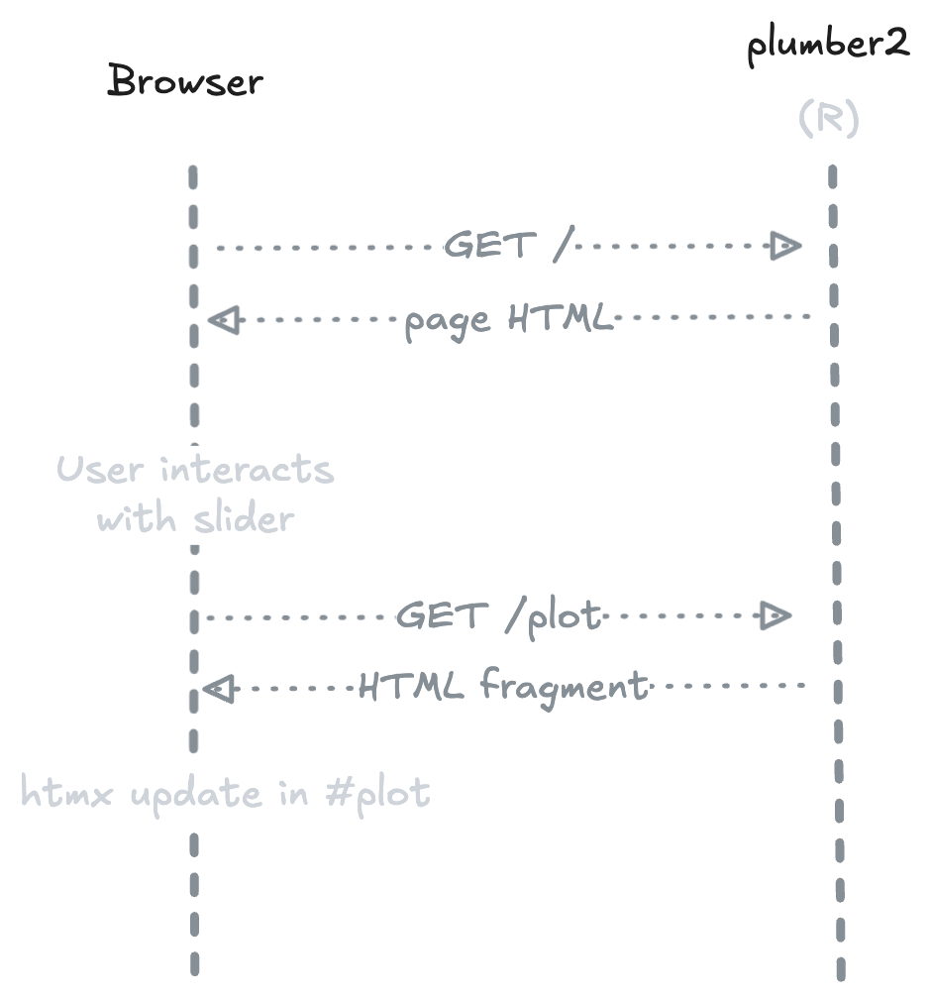

Build modern web applications in R — without writing JavaScript.
htmx handles client-side interactions via HTML attributes. plumber2 handles R endpoints server-side. htmxr bridges the two with R helpers that generate the right HTML and wire everything together.
Installation
pak::pak("hyperverse-r/htmxr")How it works

On first load, the server returns a complete HTML page. When the user interacts with an element (e.g. a slider), htmx sends a request to the R endpoint and swaps the response into the DOM — no JavaScript needed, no full page reload.
Example — Old Faithful
The hello example ships with htmxr. It reproduces the classic Old Faithful histogram with a slider to control the number of bins.
The page
The GET / endpoint returns a full HTML page built with hx_page() and hx_head(). The slider is created with hx_slider_input(), which generates a <input type="range"> wired to htmx attributes.
#* @get /
#* @parser none
#* @serializer html
function() {
hx_page(
hx_head(title = "Old Faithful Geyser Data", bootstrap_css),
tags$div(
class = "container py-5",
# ...
hx_slider_input(
id = "bins",
label = "Number of bins:",
value = 30,
min = 1,
max = 50,
get = "/plot",
trigger = "input changed delay:300ms",
target = "#plot"
)
# ...
)
)
}The endpoint
The GET /plot endpoint is a standard plumber2 handler. It receives the bins query parameter, generates an SVG histogram, and returns it as an HTML fragment.
generate_plot <- function(bins = 30) {
svg_string <- svglite::xmlSVG({
x <- faithful[, 2]
bins_seq <- seq(min(x), max(x), length.out = as.numeric(bins) + 1)
hist(x, breaks = bins_seq, col = "darkgray", border = "white")
})
svg_string
}
#* @get /plot
#* @query bins:integer(30)
#* @parser none
#* @serializer none
function(query) {
generate_plot(query$bins)
}

Run it
hx_run_example("hello")Design philosophy
htmxr is built around a few explicit constraints:
Primitives, not a framework — htmxr provides low-level building blocks. It doesn’t impose a page structure, a routing convention, or an application model. You compose your own app from small, predictable pieces.
HTML over abstraction — Every
hx_*function produces standard HTML elements withhx-*attributes. There is no hidden layer, no reactivity graph, no virtual DOM. What you write in R is what lands in the browser.CSS-agnostic — htmxr doesn’t depend on any CSS framework. Use Bootstrap, Tailwind, plain CSS, or nothing at all.
R-centric — All logic lives in R. htmx handles client-side interactions via HTML attributes — no JavaScript required in your application code.
htmltools re-exported —
tags,div,p, etc. are available directly from htmxr, so you don’t need to load htmltools separately.
Code of Conduct
Please note that the htmxr project is released with a Contributor Code of Conduct. By contributing to this project, you agree to abide by its terms.